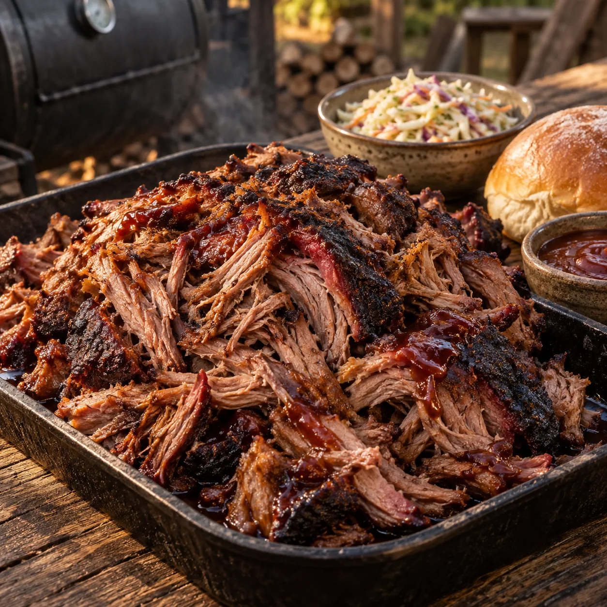

Unsere Klassiker · Grill & BBQ
Pulled Pork aus dem Smoker

Außen eine kräftige, rauchige Kruste und innen butterzartes Fleisch: Dieses Pulled Pork darf ganz langsam im Smoker garen, bis es sich mühelos auseinanderzupfen lässt.
Zutaten
Zubereitung
- Salz, Paprikapulver, Zwiebel- und Knoblauchgranulat, Rosmarin, Thymian, Senfpulver, Chilipulver, Zucker und Pfeffer gründlich zu einem Rub vermischen.
- Den Schweinenacken dünn mit Sonnenblumenöl einreiben. Den Rub rundherum großzügig verteilen und sorgfältig einmassieren. Abgedeckt mindestens 2–3 Stunden, am besten über Nacht, im Kühlschrank ziehen lassen.
- Den Smoker oder Kugelgrill auf 100–110 °C einregeln. Das Fleisch in den indirekten Bereich legen, sodass es nicht direkt über der glühenden Kohle liegt. Für die Zubereitung im Kugelgrill die Kohle ringförmig am Rand anordnen und nur an einem Ende anzünden. So glüht der Kohlering nach und nach weiter und hält die Temperatur über viele Stunden möglichst gleichmäßig. Das Fleisch bei geschlossenem Deckel etwa 16–18 Stunden langsam garen und nach Bedarf Räucherchips hinzugeben.
- Sobald das Fleisch eine Kerntemperatur von etwa 90 °C erreicht hat und sich weich anfühlt, vorsichtig vom Grill nehmen. Locker abdecken und etwa 30 Minuten ruhen lassen.
- Das Fleisch mit zwei Gabeln oder Pulled-Pork-Krallen entlang der Fasern auseinanderzupfen. Nach Geschmack Juli's BBQ Sauce untermischen. Nur so viel Sauce verwenden, dass das Fleisch saftig bleibt.
So kannst du es servieren
Das Pulled Pork schmeckt hervorragend als Pulled Pork Burger. Es passt außerdem pur auf eine klassische BBQ-Plate – zum Beispiel gemeinsam mit Spareribs, Brisket, geräucherter BBQ-Wurst und Coleslaw.
Vorratstipp
Pulled Pork braucht viel Zeit – deshalb lohnt es sich, gleich etwas mehr zuzubereiten. Reste vollständig abkühlen lassen, portionsweise mit etwas Fleischsaft vakuumieren und einfrieren. Zum Aufwärmen den verschlossenen, hitzebeständigen Beutel in ein heißes, nicht sprudelnd kochendes Wasserbad legen, bis das Fleisch vollständig erhitzt ist. So ist der Pulled-Pork-Vorrat schnell wieder startklar.